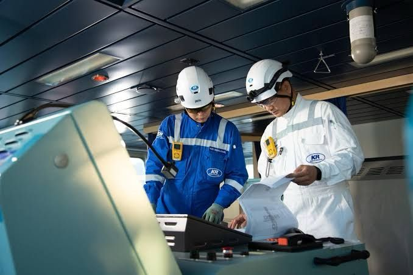

TAQWA MARINE SERVICE is a trusted exporter and supplier of genuine, refurbished marine electronics, based in Shagorika, Pahartali, Chattogram.
We source, test and supply bridge navigation, communication and engine room automation equipment to ship managers, marine engineers and yards around the world, helping them keep vessels safe while lowering operating costs.